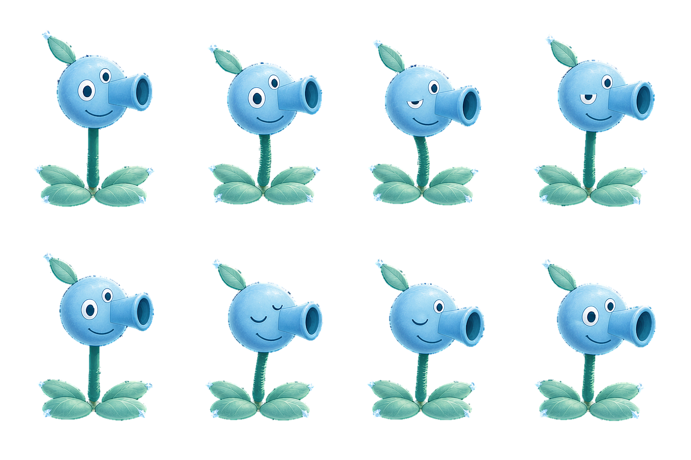

中间 → 左摆 → 回中眨眼 → 右摆 → 回中。直接切换8张源图，无交叉淡化、无额外程序化摆动。冰蓝头部与单根炮管作为整体运动，茎部弯曲带动，根部与底叶固定，炮口始终朝右。
上方为放大检查，下方为接近游戏中的显示尺寸。

实际导出：1536×1024 透明PNG，4列×2行。按8个实际角色区域切帧，根部定位对齐。原始带背景生成图：snowpea-sway-blink-8f-v1.png。
查看8帧姿态参考图 · 静态母版 snowpea-design-v1.png